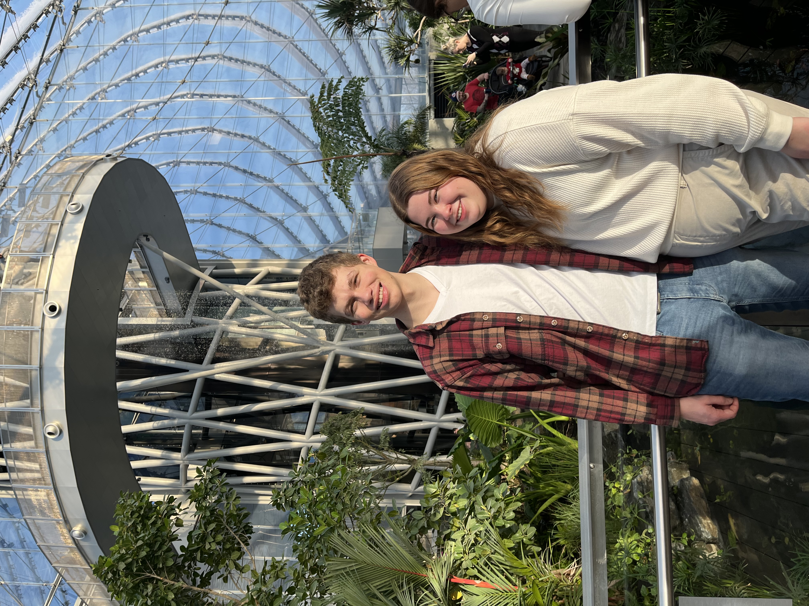
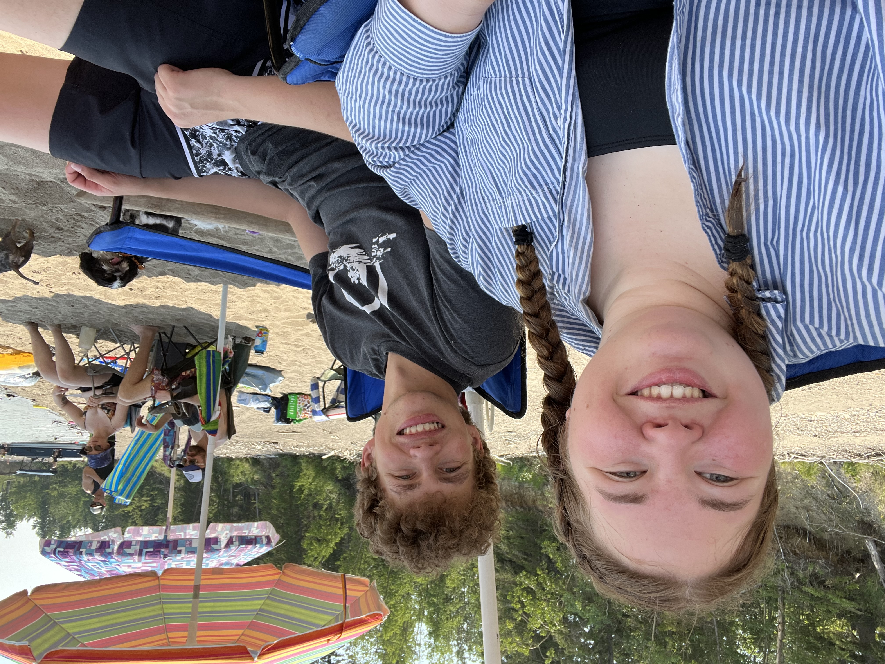
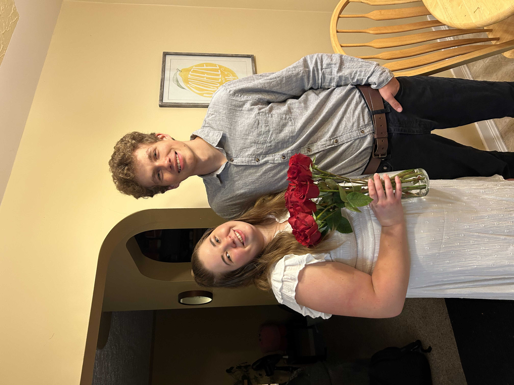
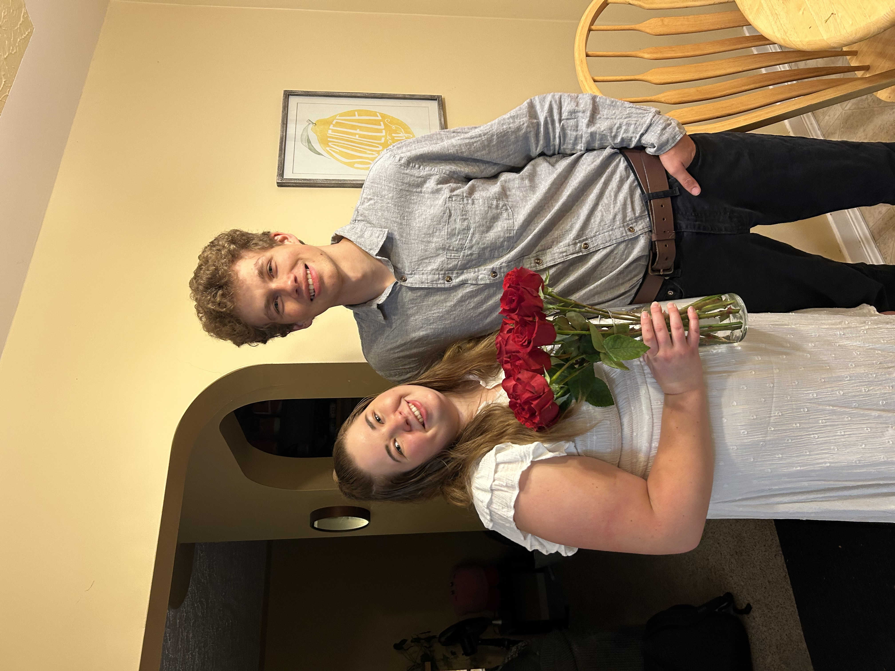
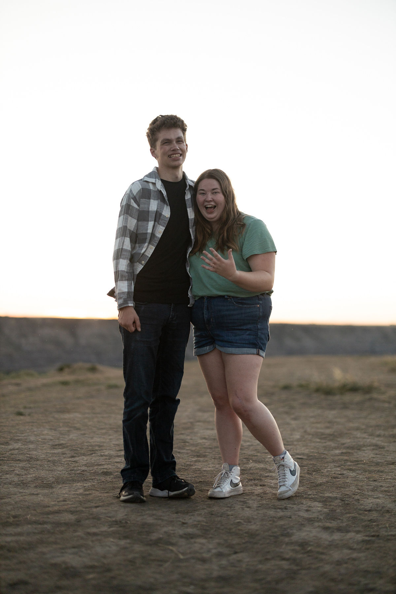

*THE* Picture of our Actual Engagement
Ethan did not hire a photogragher... I'd keep reading if I was you...
Now that you've seen the moment, let me backtrack and explain how we got here.

Ethan & I met in September 2021 on my second day in Lethbridge

We offically started dating Septmeber 28th, 2021
Everything feels right with Ethan,
and it is clear God has put us together.

after two years of dating...
 

two years of fun, laughter and at times tears.
We truly love each other and know that we are meant to be together. I did not believe
people when they said they knew they wanted to be married within a year of knowing someone,
but now I do. I am so grateful knowing I get to marry my best friend. We balance one
another perfectly and
I can't wait to spend the rest of my life with Ethan.

August 12th, 2023
I love this photo, Ethan is clearly relieved and I am ecstatic.
Ethan proposed in my hometown Drumheller at my favourite lookour point, Horsethief canyon.
Growning up I always went here to watch sunsets and I could not have asked for a more perfect spot.
We had drove to Drumheller that day and Ethan asked me if I wanted to watch the sunset
later and I agreed. After supper we went and walked up one of the ridges. I hugged Ethan and
his heart was pounding. Then and there he got down on one knee and asked me to marry him.
We got back to the main hill and a stranger walked up to us and said that she was taking pictures of
the sunset and then saw us getting engaged and captured the moment. Thus, the incredible photo we have
of our engagement.
point,